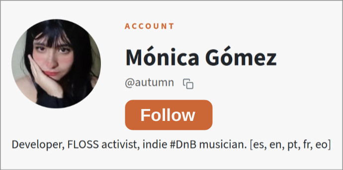
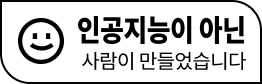
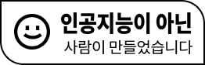
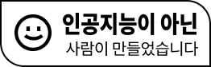

AUTUMN'S LOG
This website is 100% compatible with LibreJS
My Social Media
About Me
My Music
Autumn's Store
My Codeberg
Autumn's Lab
Buy Me a Coffee!
Latest videos

All these pictures were taken from the
FSF's Website
and are licensed under the CC BY.



 
